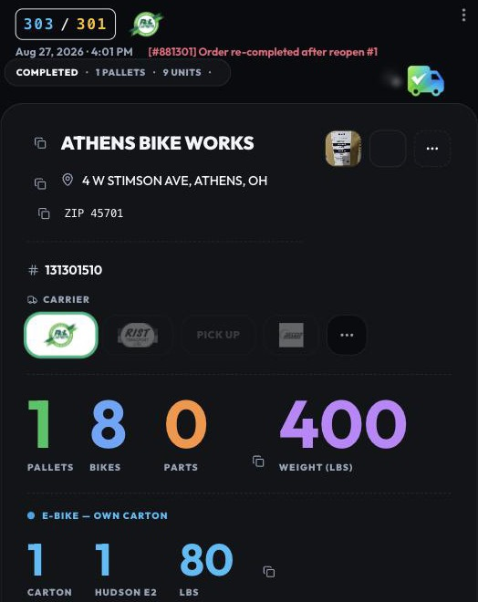
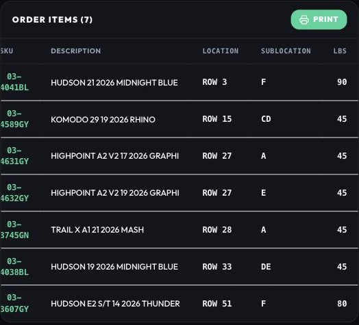
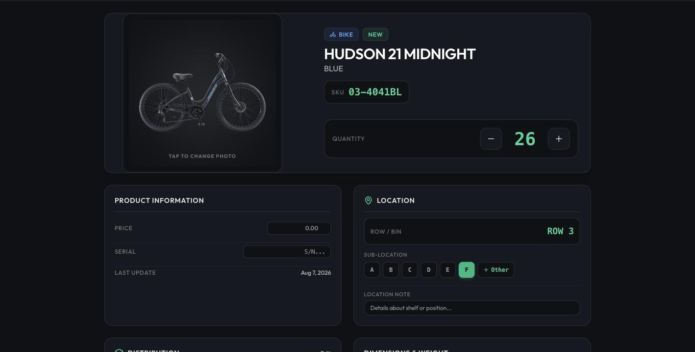
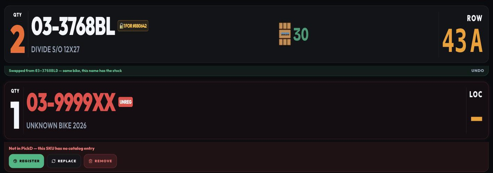
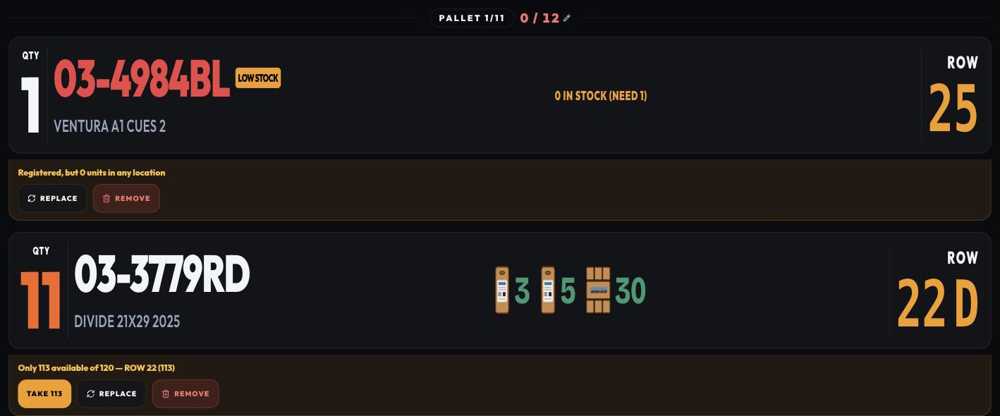

Thursday, August 27, 2026 · everything since the August 26 update · for everyone on the Ludlow floor
The short version
1. Ship: adding a bike to a completed order no longer turns it into a "part", every line now shows its weight, and a combined order opened from Shipped today shows the whole group.
2. Ship: tap a SKU to open it, carriers show 3 + "…", photos show 2 + a menu, and the "Verified" pill is gone.
3. FedEx orders show the Recipient ID to paste into Ship Manager, in Ship and in Double Check.
What you will notice
1. Ship — a combined bike counts as a bike, and weights are on every line
BeforeToday. Order 881303 — one Riptide, registered since February — was combined into completed order 881301. Ship counted it as a part and asked for its weight; the screen said 2 pallets, 8 bikes and 1 part that did not exist, and a total weight that made no sense. Those four numbers — pallets, bikes, parts, weight — are what goes into Audit Source or FedEx for the shipment, so they have to be right. The only way out was a calculator: the weight of every bike, added by hand. In the end everything fit on one pallet.
NowShip reads each line's bike/part and weight from the order itself the moment it opens, so the count is right from the first second. The Order Items table has a new Lbs column — what each line weighs (unit × quantity) — so the calculator is on the screen. A ? in orange means no weight is on file yet. (The 2 pallets were 1 + the new order's own estimate; that part is by design and adds up once the count is right.)
Also fixed today — a combined order opened from Shipped today:
BeforeOpen 303 / 301 again after it shipped — to answer the driver, or a claim — and it listed 7 lines under a header that said 9 units, with the Riptide from 881303 nowhere. Checking a shipped order against its list meant counting the pallet photo instead.
NowThe whole group shows, with both orders under Combined Order, whether the order is still to ship or already shipped.


Live this afternoon, after the fix: 303 / 301 — 1 pallet, 9 bikes, 0 parts, 480 lb, with both orders listed under Combined Order. Right: the Order Items table with the new Lbs column (90 = two Hudson 21 at 45 each). The carrier picker (R+L selected, RIST, FedEx, …) and the two photo tiles with the … menu are the same screen.
2. Ship — four small things you asked for
Where
Before
Now
Order Items
The list already shows the SKUs. What Ship is for is the weight — the numbers that go to Audit Source or FedEx — and a bike with no weight on file meant leaving Ship to put it in.
Tap a SKU to open its item detail and enter the weight right there (Dimensions & Weight). If the SKU sits in more than one place, you get the same list of locations as the long-press in Double Check, with Edit on each row.
Carrier picker
Every carrier logo on every order, and R+L — the one used most — was one among many to find each time.
Shows R+L, FedEx, RIST (the three most used) plus whichever is selected; … shows the rest.
Pallet photos
Three or four thumbnails pushed the totals and the buttons below the fold on the phone.
Two thumbnails at most; the +N tile opens Take photo / View all.
Order card
Every card in Ship said Verified. A label that is always on says nothing, and it hid the two that matter.
The green label is gone — every order in Ship is already verified. Waiting and Editing still show.

Live on August 27: tapping 03-4041BL in Order Items opens the item straight away — 26 on hand, ROW 3 F. The carrier picker (R+L selected, RIST, FedEx, …) and the two photo tiles with the … menu are in the order screenshot above.
3. FedEx Recipient ID, right where you ship
BeforeAt the FedEx station the destination was found in Ship Manager's address book by name, or typed again from the paper. A dealer saved twice — with and without the "LLC", an old street — is two records, and picking the wrong one is a bike delivered to last year's address.
NowThe number Ship Manager wants is the customer's AS400 account plus the two-digit ship-to (0010495 00 → 1049500). PickD keeps it and shows it as a chip on the Ship card and in Double Check, only on FedEx orders, with a copy button and the one instruction for Ship Manager: paste it in Recipient ID and the address fills itself. Orders captured before this get their number from the new Maintenance button on the Bay 2 watcher (preview first, then apply).
4. On the Bay 2 watcher
Before: a warranty or consumer-direct order showed the channel as the customer, and the person it was for was only on the paper. Now: every card shows the Ship-to name next to the Bill-to.
Before: filling the AS400 account on the orders captured before today was a script one person ran, with no way to see first what it would change. Now: a … → Maintenance panel — one card per action with a one-line explanation, Preview (nothing written) and Apply. First action: that backfill.
Before: a line the catalog did not know was written with the AS400 spelling (03-3768BLD), so registering the bike under the name on the box (03-3768BL) did not cure the order — LOW STOCK stayed. Now: the line is written the way the box says it, and registering it makes the order match right away.
Already installed on the Bay 2 Mac (August 27).
5. Double Check — the LOW STOCK panel, tested on every case
BeforeYesterday morning, order 881288: both Riptides flagged LOW STOCK with no location, while 145 and 76 of them sat in ROW 43 and ROW 41 under their other names. Since June that happened on seven orders — 24 "Replaced" notes between the two names in two weeks, each one a person opening Edit Order to swap what PickD could have swapped itself. And when the fix was not a sibling, the badge did not say whether the bike was unregistered, gone, reserved by another order, or just short by a few.
NowDouble Check works the line out by itself the moment it opens, names the case, and offers only the buttons that make sense for it. No order on the floor had one today, so it was tested on a practice order with all four cases at once:

Same bike, other name (the AS400 "BLD" spelling): swapped on its own to 03-3768BL in ROW 43 A, with Undo on the line. Not in PickD: Register opens the Bike-or-Part form already filled in; Replace and Remove ask for a reason.

Registered, 0 units anywhere: Replace or Remove. Not enough (113 of 120 in ROW 22): Take 113 adjusts the line in one tap, or Replace / Remove.
Small fix from the test: for a second or two while the shelves were still being read, a line could say "0 units in any location" with Remove one tap away. The panel now waits until the stock is known, like the "checking…" text above it.
Mentioned only, so you know it happened
Fourteen catalog names had ended up as "ALLEGRO A1 23 THUNDER GREY | Auto-cancel verification timeout | auto-restore on cancel" — two of them were in the FedEx dimensions file, so that sentence would have gone to FedEx as the description of the carton. Stock moves no longer glue notes onto names; the note goes to the item's note field, and the three names still carrying one were cleaned.
The same bike had two names in the catalog and the stock moved between them with every rename (three times this year), so "which name has the stock" was a fact of the month. The AS400 "D" spellings (03-3768BLD, 03-3769BLD, 03-3779RDD) were merged into the 2-letter names the boxes use. Stock unchanged.
Safeguards on the code side (tests run on every push) and a tidier backlog.
Still from the floor: the physical check of the merged parts (now 25 — the 22 from yesterday plus the three above). The Double Check panel above was tested on a practice order; the first real LOW STOCK order is worth a look.
Coming up
Ship: one pulsing button for the lithium / carton alerts instead of three banners (waiting on wording).
Opening a completed order from the Board goes straight to its Picking Summary.
Assist mode in Double Check: two people on one multi-pallet order.
PickD · August 27, 2026 · Questions: Rafael · Menu → What's new to print this page